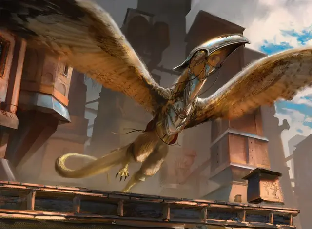

Скайек Рух
Skyjek Roc
Большой Монстр, без мировоззрения

Класс Доспеха 15 (кираса)
Хиты 37 (5к10 + 10)
Скорость 20 футов, летая 90 футов
| мод | спас | ||
|---|---|---|---|
| СИЛ | 20 | +5 | +5 |
| ЛОВ | 13 | +1 | +3 |
| ТЕЛ | 14 | +2 | +2 |
| мод | спас | ||
|---|---|---|---|
| ИНТ | 3 | −4 | −4 |
| МДР | 10 | +0 | +2 |
| ХАР | 8 | −1 | −1 |
Навыки Восприятие +2
Чувства пассивное Восприятие 12
Опасность 2 (450 опыта)
Бонус мастерства +2
Особенности
Острый взгляд. Рух совершает с преимуществом проверки Мудрости (Восприятие), полагающиеся на зрение.
Действия
Мультиатака. Рух совершает две атаки: одну Клювом и одну Когтями.
Клюв. . Рукопашная атака оружием: +7 к попаданию, досягаемость 5 фт., одна цель. Попадание: 9 (1к8 + 5) колющего урона.
Когти. . Рукопашная атака оружием: +7 к попаданию, досягаемость 5 фт., одна цель. Попадание: 10 (2к4 + 5) рубящего урона.
Описание
Воздушные силы Легиона Боросов — небесные рыцари, которые летают вместе с ангелами, — поднимаются в воздух верхом на Скайек Рух. Эти птицы названы в честь небесных рыцарей, которые также являются частью Лиги Воеков, называемых Скайеками. Сидя на спинах своих рухов, эти конные солдаты проводят разведывательные миссии, обстреливают врагов на земле и вступают в бой с летающими противниками.
Форма тела скайкк рухов позволяет относительно легко оседлать их и ездить верхом, и обычно они снабжены доспехом покрывающим голову и грудь.
Скайек рухи упрямы и импульсивны, но их храбрость делает их идеальными ездовыми животными для рыцарей Боросов.